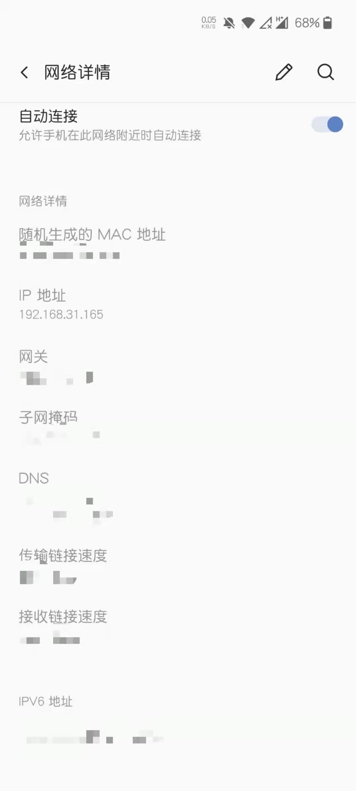
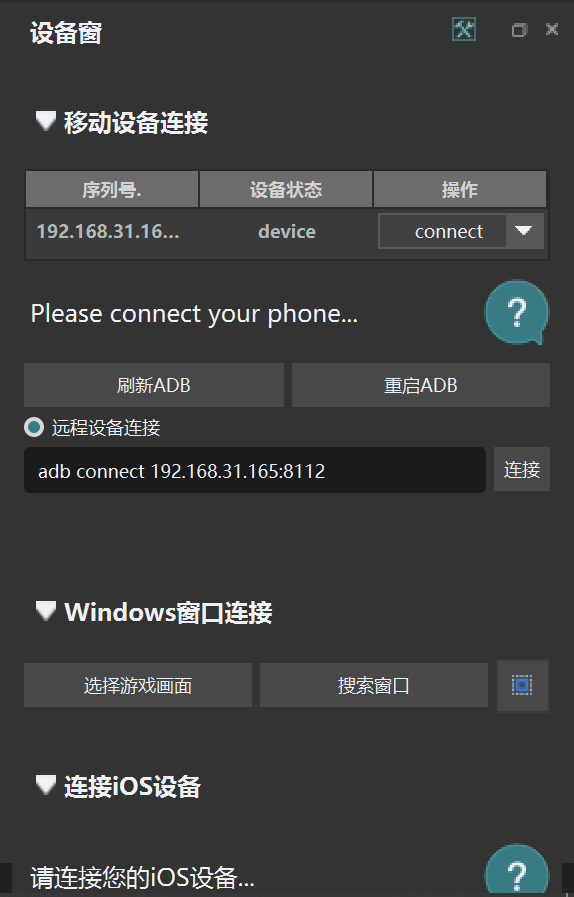
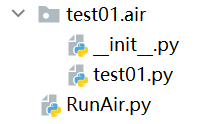
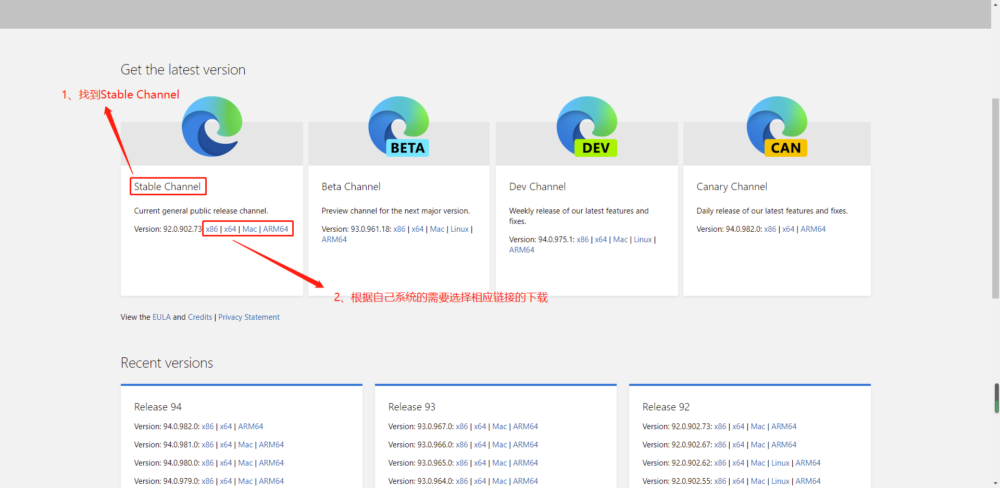

自动化测试框架大总结（一）
自动化测试一般是指软件测试的自动化，软件测试就是在预设条件下运行系统或应用程序，评估运行结果，预先条件应包括正常条件和异常条件。它是把以人为驱动的测试行为转化为机器执行的一种过程。通常，在设计了测试用例并通过评审之后，由测试人员根据测试用例中描述的规程一步步执行测试，得到实际结果与期望结果的比较。在此过程中，为了节省人力、时间或硬件资源，提高测试效率，便引入了自动化测试的概念。由于以下原因，自动化测试非常重要：
- 手动测试所有工作流、所有阶段都需要花费时间和金钱
- 手动测试多语言站点很困难
- 软件测试中的自动化测试不需要人工干预
- 自动化测试可提高测试执行速度
- 自动化有助于增加测试范围
- 长时间手工测试可能会变得很无聊，因此容易出错
哪些测试用例可以自动化
可以使用以下标准选择要自动化的测试用例，以提高自动化的投资回报率
- 高风险-关键业务测试案例
- 重复执行的测试用例
- 非常繁琐或难以手动执行的测试用例
- 耗时的测试用例
以下类别的测试用例不适合自动化：
- 新设计的测试用例，并且至少一次不手动执行
- 需求经常变化的测试用例
- 临时执行的测试用例
自动化测试流程
自动化过程中遵循以下步骤
- 选择测试工具
- 定义自动化范围
- 规划，设计和开发
- 测试执行
- 维护
使用语言
以下均使用python作为主要的计算机语言，虽然有些可以使用其他的语言，比如说java。
python 特点/特性：
- 易于学习，入门所需时间极短
- 少量代码即可实现功能，python代码非常精简，只需要少量代码即可构造更多功能
- 可扩展性非常好，python上有各种各样的模块、工具库，导入即可使用
- 支持多平台Windows/Linux/macOS，python作为目前美国高校最受欢迎的编程语言之一，可在多个领域平台中广泛使用
- 可与多种编程语言集成（C/Java/C#/ObjectC/Ruby等），且实现稳定性一流
设备连接
- 真机（Android）
- Android 模拟器
- 电脑（Web自动化等）
注意，Web自动化需要安装驱动，下面会提及
真机需要连接上电脑，然后在真机上打开USB调试方可使用
Airtest
官网：Airtest Project (netease.com)
教程：5分钟上手自动化测试——Airtest+Poco快速上手 - Airtest Project Docs (netease.com)
文档：airtest.core.api module — airtest 文档
Airtest是一套跨平台的测试框架，它提供了跨平台的API，包括安装应用、模拟输入、断言等。 基于图像识别技术定位UI元素，你无需嵌入任何代码即可进行自动化测。测试脚本运行后可以自动生成详细的HTML测试报告，让你迅速定位失败的测试点，适用于游戏和App，支持平台有Windows、Android和iOS。
Airtest 集成的多个测试框架，基于web自动化测试的selenuim框架，基于Chrome Devtools Protocol协议，自动录制生成selenium脚本，精确定位与操作界面元素，支持多浏览器（Chrome、Safari、Firfox等主流浏览器）；Poco基于UI控件识别的自动化框架，目前支持Unity3D/cocos2dx-/Android原生app/iOS原生app/微信小程序，也可以在其他引擎中自行接入poco-sdk来使用。
AirtestIDE 是一个强大的GUI工具，是网易配套推出的跨平台UI自动化测试编辑器，它内置了Airtest和Poco的相关插件功能，可以帮助你快速简单地完成录制/编写测试脚本。
安装
进入官网安装Airtest IDE即可。
python需要使用pip安装，命令为：
pip install airtest官方Demo
官方Demo总会有它的价值。
from airtest.core.api import *
# 通过ADB连接本地Android设备
connect_device("Android:///")
#安装待测软件apk，路径信息。
install("path/to/your/apk")
#开始运行app
start_app("com.pingan.certicationApp")
#点击某个图片，Airtest中基于图像识别语法，图片自己提供。
touch(Template("image_of_a_button.png"))
#滑动语音，开头图片跟结尾图片
swipe(Template("slide_start.png"), Template("slide_end.png"))
#添加断言的图片
assert_exists(Template("success.png"))
#点击Android上的返回键
#keyevent("BACK")
#点击Android上的Home键返回
#home()
#uninstall("package_name_of_your_apk")使用指南
在AirtestIDE中新建的脚本，后缀都为 .air ，但实际上我们在运行的时候， 运行的是.air目录下的同名.py文件 。因此，就像一个普通的python脚本那样，当我们需要使用airtest的接口时（例如touch指令），我们需要在.py脚本的最前面import airtest的api。我们可以在AirtestIDE里新建一个脚本，就能看到默认的初始化代码:
# -*- encoding=utf8 -*-
__author__ = "user"
from airtest.core.api import *
# 从api中import接口后，就能直接使用airtest的各个接口了
auto_setup(__file__) # 自动初始化设备在Airtest中，需要编写大量的截图语句，像这样:
touch(Template("image_of_a_button.png"))其中的 Template("xx.png") 即为一个图片对象，如果要手工进行截图和代码编写，工作量会比较大，因此这里推荐大家使用专用的 AirtestIDE 进行截图语句的开发，会使脚本的编写事半功倍。
在 官网 下载AirtestIDE，解压后即可使用，里面附带的Airtest辅助窗对于编写Airtest的脚本语句来说十分便捷：

鼠标放在Airtest辅助窗的按钮上能看到相关接口参数信息，直接点击按钮就能生成对应的语句，或是可以直接在当前连接的设备画面上进行截图，截取完成后将会在脚本窗口生成带截图的语句。
apk操作
打开app
虽然打开app时可以使用Airtest截图打开，但是请注意：打开应用尽量使用start_app而不是截图脚本相对用截图脚本来启动应用，脚本会更加简洁，兼容性也会更好。
# 打开网易云音乐
start_app("com.netease.cloudmusic")查看打开的app的包名有3种办法
第一种
cmd中输入命令：adb shell am monitor
然后启动需要获取包名的应用
第二种
cmd中输入命令：adb shell pm list packages -3
查看自己安装的app包名
第三种
下载雷电模拟器的包名类名查看器，找到app后直接点击复制包名（方便快捷）
下载地址：包名类名查看器电脑版下载包名类名查看器PC版下载雷电安卓模拟器 (ldmnq.com)
停止应用运行
driver.close_app()安装/卸载应用
# 安装应用
install(r"D:\demo\tutorial-blackjack-release-signed.apk")
# 卸载应用
uninstall("com.netease.cloudmusic")调用本地adb执行测试
阅读源码可知道，airtest使用的是自带的adb，这个时候就需要调用系统的adb才能不进行冲突，修改源码：
%python_home%\site-packages\airtest\core\android\android.py
如果是linux，使用which adb寻找adb
第45行中，ADB初始化的时候加形参adb_path，让它等于自己的adb：
# init adb
self.adb = ADB(self.serialno,adb_path="F:/environment/Android_SDK/platform-tools/adb.exe",server_addr=host, display_id=self.display_id, input_event=self.input_event)
self.adb.wait_for_device()执行shell命令
在执行代码过程中，不可避免会到更改手机状态的操作，这个时候需要用到shell命令来调试手机，Airtest中的driver封装了执行shell命令的方法。
获取当前设备/连接当前设备
# 连接设备
dev = connect_device("Android:///device1")
# 获取当前设备
dev = device()运行adb shell命令
dev.shell("dumpsys wifi | grep mWifiInfo") # 检查wifi网络状态
dev.shell("svc wifi disable") # 关闭wifi
dev.shell("svc wifi enable") # 开启wifi
dev.shell("svc data disable") # 关闭数据网络
dev.shell("svc data enable") # 开启数据网络Android自动化测试常用API
autosetup(_file)：自动初始化设备，脚本运行命令行有两种形式，命令行中的参数包含device、log等
auto_setup(__file__) # 在运行时的命令行中如果传入了类似--device Android:///这样的设备参数，那么脚本在初始化时会自动连上对应的设备，不需要再另外写代码连接了。
auto_setup(__file__,devices=["Android://127.0.0.1:5037/5PZTQWQOGES8RWUG"]) # 如果没有在初始化时连上设备，可以在接口中指定运行脚本的设备，或者使用connect_device接口来连接设备。device()：获取到当前使用中的设备。
# 在Android中，有一个平台独有的接口list_app可以列出所有安装过的应用
dev = device() # 先获取到当前设备对象，这里的dev即是一个Android对象
print(dev.list_app()) # 然后就可以调用平台独有接口了connect_device()：连接设备，其中127.0.0.1代表本机IP，5037是默认的adb port，serialno是android手机的序列号。
from airtest.core.api import *
# 连上第一台手机
dev1 = connect_device("Android://127.0.0.1:5037/serialno1")
# 连上第二台手机
dev2 = connect_device("Android://127.0.0.1:5037/serialno2")set_current()：在多个设备中进行切换
# 第一种：传入数字0、1、2等，切换当前操作的手机到Airtest连接的第1台、第2台、第3台手机
set_current(0)
set_current(1)
set_current(2)
# 第二种：切换当前操作的手机到序列号为serialno1、serialno2的手机
set_current("serialno1")
set_current("serialno2")touch()：点击操作，可以是图片，也可以是坐标（坐标可以是绝对，可以是动态，推荐使用动态，可以在不同手机的分辨率下点击正确的位置）
touch(Template(r"scriptshots/tpl1623669702383.png", record_pos=(0.177, -0.018), resolution=(1600, 900))) # 根据录制脚本时所截取的图像进行点击
touch([500,500]) # 绝对坐标点击
w,h = dev.get_current_resolution() # 获取当前手机分辨率
touch([0.5*w, 0.5*h]) # 动态坐标点击，推荐使用wait()：可以等待画面中某个图片出现，如果在指定的时间范围内匹配到了该图片，就会返回图片所处位置的焦点，否则抛出TargetNotFoundError异常
wait(Template(r"tpl1606821804906.png")) # timeout after ST.FIND_TIMEOUT
# find Template every 3 seconds, timeout after 120 seconds
wait(Template(r"tpl1606821804906.png"), timeout=120, interval=3)
# 可以在每次查找目标失败时，指定一个回调函数
def notfound():
print("No target found")
wait(Template(r"tpl1607510661400.png"), intervalfunc=notfound)swipe()：可以从一个位置滑动到另外一个位置
swipe(Template(r"tpl1574067097045.png"), vector=[0, -0.5]) # 以图片的坐标为原点，向下滑动0.5
w,h = d.get_current_resolution()
swipe([0.5*w,0.5*h],vector=[0, 0.5]) # 以屏幕中间为原点，向上滑动0.5
swipe([0.5*w,0.3*h],[0.5*w,0.8*h]) # 一个坐标滑动到另外一个坐标
swipe(Template(r"tpl1574067097045.png"),Template(r"tpl1574054095465.png")) # 一个图片的坐标滑动到另外一个图片的坐标
swipe([0.5*w,0.3*h],Template(r"tpl1574067097045.png")) # 一个坐标滑动到一个图片的坐标exists()：判断画面中是否存在某个图片,如果匹配到图片，返回图片所处位置的焦点，否则返回False
if exists(Template(r"tpl1606822430589.png")):
touch(Template(r"tpl1606822430589.png"))text()：输入文本
text("test")
text("test", enter=False)# enter – 是否在输入完毕后，执行一次 Enter ，默认是True
text("test", search=True)# 在Android上，有时你需要在输入完毕后点击搜索按钮sleep()：线程挂起
sleep(10) # 括号里面的单位为秒Skeyevent()：输入某个键，例如 home、back 等等
keyevent("HOME")# 按Home键pinch()：指定放大还是缩小，还可以指定中心位置点和放大缩小的比率
pinch(in_or_out='out', center=(300, 300), percent=0.4)# in_or_out后可输入"in"或者"out"，意思是缩小、放大assert_exists()：设备屏幕上存在断言目标
assert_exists(Template(r"tpl1607324047907.png"), "assert exists")assert_not_exists()：设备屏幕上不存在断言目标
assert_not_exists(Template(r"tpl1607324047907.png"), "assert not exists")assert_equal()：断言两个值相等
assert_equal(1, 1, msg="assert 1==1")assert_not_equal()：断言两个值不相等
assert_not_equal(1, 2, msg="assert 1!=2")assert_exists()与assert_equal()的区别在于，assert_exists断言的对象是图片，assert_equal断言的对象是数值
snapshot()：截图到指定的路径下
snapshot(filename='xxx/test.jpg',mag='截图成功')wifi远程运行
前面这些方法都是通过有线连接运行的，但是在无线下，Airtest也能运行，这和uiautomator如出一辙
确保手机开启了usb调试，用数据线把手机和电脑连接起来，之后在终端里面执行命令：
adb tcpip 8112其中的端口号可以自行设定，但不能和已有的端口冲突。执行后出现restarting in TCP mode port字样就可以将数据线拔下了。
在手机的wifi设置上，找到正在连接wifi的IP地址

之后在Airtest IDE中找到远程设备连接，输入：
adb connect 192.168.31.165:8112192.168.31.165就是IP，8112就是设置的端口号，点击连接后，刷新ADB即可

注意：
- 更换一个网络环境需要使用新IP重新connect即可。
- 但是如果手机重启了，就需要重新连接数据线再次开启端口。
- 开启端口可以通过adb，也可以直接在手机上打开，但一般需要root权限和特殊软件。
录屏
录屏功能仅适用于安卓平台，所以当测试设备是安卓真机或者部分安卓模拟器时才能够对脚本的运行过程进行录屏操作。
在命令行使用 airtest run 运行脚本时，可以通过添加 --recording 参数来录制脚本运行的视频。（运行结束后，录屏文件会默认保存在log文件夹里面，使用 recording_手机序列号 来命名录屏文件）
airtest run "D:\test\Airtest_example.air" --device android://127.0.0.1:5037/emulator-5554?cap_method=MINICAP_STREAM^&^&ori_method=MINICAPORI^&^&touch_method=MINITOUCH --log "D:/test\41f68fdf265d8c13998d0a1a7b992889" --recording也可以在脚本中开启关闭录屏
# 开启录屏
recorder.start_recording(max_time=10)
# 结束录屏
recorder.stop_recording(output="test.mp4")Windows自动化测试常用API
device()：连接设备
win = device()key_press(key)：通过发送键盘扫描码模拟键盘按键按下
win.key_press('W')key_release(key)：通过发送键盘扫描码模拟键盘按键释放
win.key_release('W')mouse_move(pos)：模拟鼠标移动
import win32api
x, y = win32api.GetCursorPos()
win.mouse_move((x+10, y+10))mouse_down(button)：模拟鼠标按下（鼠标左右键或其他）
win.mouse_down('right')mouse_up(button)：模拟鼠标释放（鼠标左右键或其他）
win.mouse_up('right')Windows脚本一些常见问题以及解决方案
游戏窗口嵌入问题
一些游戏在使用窗口嵌入模式时会出现包括无法框选窗口或者画面消失在内的问题。如果窗口无法框选的话，可以尝试搜索窗口。如果连接窗口以后整个游戏窗口消失的话，可以选择无嵌入模式。如果仍旧无法连接窗口，可以尝试桌面模式。


使用桌面模式的图像脚本处理
因为使用了桌面模式，如果你的脚本当中涉及到图像识别，那很有可能在跑脚本的过程中识别到脚本中的图像，而不是游戏画面当中的图像。此时可以右键单击脚本，选择 图片/代码模式切换 ，将模式转换成代码模式，就能顺利运行脚本了。

PC游戏的光标限制
一些PC游戏对光标进行了限制，玩家无法将光标移出游戏画面以外。在编写脚本的时候，可以利用Tab+Alt的方式进行窗口切换。
IOS的WebDriverAgent安装过程
在进行IOS的自动化测试中，我们需要用到WebDriverAgent来驱动手机。所以需要用到MacOS的Xcode来编译安装（作者已经试过用Windows，事实证明只能用MacOS来安装WebDriverAgent）。但是Windows用户占大部分，不可能让他们为了某个需求而专门买一台MacOS系统的电脑，所以需要在Windows中将MacOS系统装进虚拟机中。
关于Vmware安装MacOS的教程，链接如下：
全网最详细的VMware虚拟机安装MacOS系统教程，没有之一！！！附全部资源 - 知乎 (zhihu.com)
在【使用记事本打开后缀为.vmx的[macOS 10.14.vmx]的文件】这一部分的添加代码，语句应如下：
smc.version = "0"
cpuid.0.eax = "0000:0000:0000:0000:0000:0000:0000:1011"
cpuid.0.ebx = "0111:0101:0110:1110:0110:0101:0100:0111"
cpuid.0.ecx = "0110:1100:0110:0101:0111:0100:0110:1110"
cpuid.0.edx = "0100:1001:0110:0101:0110:1110:0110:1001"
cpuid.1.eax = "0000:0000:0000:0001:0000:0110:0111:0001"
cpuid.1.ebx = "0000:0010:0000:0001:0000:1000:0000:0000"
cpuid.1.ecx = "1000:0010:1001:1000:0010:0010:0000:0011"
cpuid.1.edx = "0000:0111:1000:1011:1111:1011:1111:1111"
featureCompat.enable = "TRUE"参考：VMware16安装Mac11.1Big Sur遇到“客户机操作系统已禁用 CPU。请关闭或重置虚拟机。”解决方案strzlz的博客-CSDN博客客户端操作系统已禁用cpu,请关闭或重置虚拟机
成功安装MacOS虚拟机后，在虚拟机的网络设置中直接调整为【桥接模式】即可用MacOS上网
脱离Mac搞iOS自动化，tidevice工具教你轻松实现！
终端筛选日志级别
运行脚本后，终端除了最上面的1条运行脚本的命令之外，剩余的就是一些 [debug]、[info]等log信息，如果只关注log里面的[error]信息，可以在脚本代码开头加上 log 级别的设定：
# -*- encoding=utf8 -*-
__author__ = "user"
import logging
logger = logging.getLogger("airtest")
logger.setLevel(logging.ERROR)这样运行时只会在初始化手机时会有少量 log 输出，初始化完毕后就能够对 logger 进行过滤了。
若是在Airtest IDE中运行脚本，则只需要在log输出窗口中直接点击筛选即可。
运行脚本
- 使用airtest ide运行
- 使用命令行运行脚本
airtest run untitled.air --device Android:///手机设备号 --log log/ # 使用airtest命令运行
python -m airtest run untitled.air --device Android:///手机设备号 --log log/ # 使用python命令行运行
airtest run test.air --device Android:/// --log logs/ --no-image# 使用airtest命令运行，但不保存截图关于安卓的手机设备号码，其字符串定义为Android://<adbhost[localhost]>:<adbport[5037]>/<serialno>，其中，adbhost是adb server所在主机的ip，默认是本机127.0.0.1，adb port默认是5037，serialno是android手机的序列号。更多adb的方面的内容请参考文档 ADB 。
在平时的脚本运行中，我们一般可以这样写:
- 什么都不填写，会默认取当前连接中的第一台手机：
Android:/// - 连接本机默认端口连的一台设备号为79d03fa的手机：
Android://127.0.0.1:5037/79d03fa - 用本机的adb连接一台adb connect过的远程设备，注意10.254.60.1:5555其实是serialno：
Android://127.0.0.1:5037/10.254.60.1:5555 - 连接一个Windows窗口，窗口句柄为123456：
Windows:///123456 - 连接一个Windows窗口，窗口名称匹配某个正则表达式：
Windows:///?title_re=Unity.* - 连接windows桌面，不指定任何窗口：
Windows:/// - 连接iOS手机：
iOS:///127.0.0.1:8100
注意： 如果自己拼写的设备字符串无法正确连接设备，但是在AirtestIDE中可以正常连接的话，可以考虑先在AirtestIDE中运行一次脚本，然后将运行时自动生成的命令行里 --device Android:/// 参数复制出来，即可在代码中使用了，这种做法可以极大程度避免设备字符串编写错误的问题。
除了上述命令行外，也可以通过python调用命令行输入命令来达到目的，这样就可以直接在python中开启.air项目
# -*- encoding=utf8 -*-
import os
os.system("airtest run test01.air --device Android:///127.0.0.1:7555")注意，该.py文件需要放在.air文件夹外面，具体目录如下

用bat文件执行Airtest脚本
首先看下如何新建 .bat 文件。首先我们需要在电脑上新建一个 .txt 文件，并输入以下内容：
::关闭回显
@echo off
::切换到D盘
D:
::进入D盘的test目录
cd D:\test
::执行 airtest run 命令
start airtest run newsLogin.air
exit其中 ::xxx 表示的是注释内容，可以不写入 .txt 文件中；另外示例脚本的路径为 D:\test\newsLogin.air ，所以这里还做了切换到脚本路径的操作，读者可以根据自己脚本的实际情况来进行切换。
还需要注意的是，在上述示例中已经在示例脚本的开头添加了设备和 log 的初始化内容，所以不用另外在运行命令后面加上各种运行参数：
auto_setup(__file__,logdir=True,devices=["Android://127.0.0.1:5037/emulator-5554"])如果测试设备相对固定，也建议直接将这些参数写到脚本中，可以简化命令行运行脚本的命令。
写完以上几条命令后，关掉 .txt 文件，将他的后缀名 txt 改成 bat ，之后会弹出重命名的警示弹窗，点击“是”即可。
用bat文件顺序执行多个Airtest脚本
使用 .bat 文件成功执行单个airtest脚本之后，试试用 .bat 文件顺序执行多个airtest脚本：
@echo off
D:
cd D:\test
title 正在执行第一个脚本
airtest run newsLogin.air
title 正在执行第二个脚本
airtest run newsUsing.air
title 正在执行第三个脚本
airtest run newsExit.air
exit可以看到，在上述登录网易新闻的示例脚本之外又增加了两个脚本，分别用来实现使用网易新闻和退出登录等操作。
所以在 .bat 文件中分别写了三条用于运行对应脚本的命令，其中 title xxx 用来指定命令提示窗口的标题，可以清晰地看出当前是在执行第几个脚本。最终的执行效果如下：
用bat文件实现多机运行
在 .bat 文件中，start 可以启动单独的命令行窗口来运行指定程序或命令。所以可以利用 start 命令开启多个命令行窗口，实现在多台设备上执行同一个脚本：
@echo off
D:
cd D:\test
start "正在使用雷电模拟器跑脚本" airtest run newsLogin.air --device Android://127.0.0.1:5037/emulator-5554
start "正在使用mumu模拟器跑脚本" airtest run newsLogin.air --device Android://127.0.0.1:5037/127.0.0.1:7555
exit上述命令可以实现在1台雷电模拟器和1台mumu模拟器上跑同一个脚本，效果如下：
当然，还可以给每一台设备单独配置1个 .bat 文件，最后再写1个总的 .bat 文件来调度前面用于在特定设备上运行脚本的 .bat 。
提升脚本成功率
Airtest的上手并不复杂，可以说只要有一点Python脚本基础就能够轻松入门，然而随着产出的脚本代码越来越多，我们将会发现一个很严峻的问题：我们的脚本的运行结果，有时候似乎不受我们的控制。例如我们想要先判断当前画面上是否存在一个图标，只有在它存在时才进行下一步操作，然而明明画面上并没有，Airtest依然认为这个图标存在，打开报告一看才发现，它将屏幕上另外一个区域的内容判断认为是我们想找的图标了。再比如更加常见的一种情形是：我们框选了画面上的几个字，想要让它识别出来，但是运行结果时好时坏，Airtest常常认为我们选择的内容并不存在，但有时又能运行成功。
这个问题是Airtest的运行原理导致的，我们使用了图像识别的技术在当前游戏画面中查找对应的图片，然而图像识别并不能达到人眼识别的准确度，它只能尽可能地去寻找一个最符合预期的结果。这就经常导致了我们认为不存在的图片，它认为存在，或者 我们认为在画面上一眼就能找到的内容，Airtest认为不存在 。
也就是说，图像识别不是万能的！！！ 它是有 成功率 的，假设一个脚本里有10张图片，每张图片的识别成功率都能达到95%之高，10张图片全部都正确识别的概率也不过60%而已。更何况，有许多图片因为种种原因，识别成功率远远低于95%这个值，要想脚本运行100%正确就更难了。
因此，我们在编写完脚本后，可以让脚本多运行几次，然后对成功率低的部分进行改进，这是几个值得注意的改进点：
- 截图时尽量 保证截取的图像辨识度高、独立清晰 ，例如截取一个按钮图像时，尽量不要带上太多的嘈杂背景图案，避免在背景变化后难以成功识别的问题
- 图像识别使用的算法 更适合用来识别按钮类（带边框）、图标类的图像 ，仅仅单独截取几个文字的识别成功率很低，请尽量调整图片截取内容来达到较好的识别效果，避免截取识别效果较差的内容
- Airtest会尽可能地尝试适配 不同分辨率 的手机，但是在某些游戏上可能有自定义的分辨率适配规则，可以根据自己游戏的分辨率适配情况来自定义，攻略在 这里
- 若有大量重复的、非常相似的图标堆叠在一起时，有可能识别效果不佳，在我们眼中也许每一个图标上面的文字是不一样的，然而在
Airtest的眼中它们实在是太相似了。我们可以尝试修改截图，借助一些其他的背景样式，修改成辨识度更高的图片。 - 尽管我们提供了便捷的自动录制功能，能够直接将当前所有操作一步一步转换成代码，但是这种情况下自动截取的图片往往不太理想，需要手工再对截图进行调整
图像识别的配置项
在Airtest进行图像识别的过程中，有一些常见的配置项可以调整，以提升脚本运行的成功率：
- 在AirtestIDE中，可以通过双击图片，修改
threshold的值来改变图像识别的阈值，阈值越高，对图像匹配的精度要求也就越高 - 在识别图像时，Airtest会先将图像转为 灰度 图再进行识别。因此假如有两个按钮，形状内容相同，只有颜色不同的情况下，Airtest将认为它们都是相同内容。不过，我们可以通过双击图片，勾选设置里的
RGB选项来强制使用彩色图像识别 - 除了可以修改
threshold和rgb两个值以外，双击图片还能够设置识别成功后我们对于图像的点击位置target_pos，例如我们可以在识别出一个图标后，指定Airtest去点击这个图标的右下角/左上角等位置 - 具体的脚本配置方法可以在 5.2 Airtest脚本相关配置里查看
这里是大佬总结的使用airtest时的注意点，请注意细看，这会对接下来的开发有很大的帮助。网址点击即可：写了10000条Airtest截图脚本总结出来的截图经验，赶紧收藏！_AirtestProject的博客-CSDN博客_airtest 截图
Poco
官网：Airtest Project (netease.com)
教程：Poco快速上手 - Airtest Project Docs (netease.com)
文档：欢迎使用Poco (ポコ) UI自动化框架 — poco 1.0 文档
poco是一种基于UI控件搜索的自动化框架，与airtest不同，它的操作方式与appium相似。
安装
pip install pocoui官方demo
# coding=utf-8
import time
from poco.drivers.unity3d import UnityPoco
poco = UnityPoco()
poco('btn_start').click()
time.sleep(1.5)
shell = poco('shell').focus('center')
for star in poco('star'):
star.drag_to(shell)
time.sleep(1)
assert poco('scoreVal').get_text() == "100", "score correct."
poco('btn_back', type='Button').click()使用指南
Poco在大多数平台中，需要 事先接入Poco-SDK才可正常使用 ，在少数平台（如Android原生APP）可直接使用Poco，目前支持平台如下：
| 平台 | Airtest | Poco |
|---|---|---|
| Cocos2dx-js, Cocos2dx-lua | √ | 接入文档 |
| Unity3D | √ | 接入文档 |
| Native Android APP | √ | 直接使用 |
| iOS | √ | 帮助文档 |
| Egret | √ | 接入文档 |
| Other engines | √ | 可自行接入 |
| WeChat Applet&webview | √ | 参考文档 随着微信更新可能会失效 |
| Windows, MacOS | √ | 敬请期待 |
| Netease | √ | 帮助文档 |
在airtest ide中新建脚本，可以在ide中直接编写poco即可，和airtest一样，可以使用录制来加速编写代码效率。但是airtest ide中没有poco的简要说明。
初始化pocoui
这里用Android作为例子，不同的引擎有不同的初始化方式，详情看文档，这里用的最多就是Android，所以只示例了Android。
from poco.drivers.android.uiautomation import AndroidUiautomationPoco
poco = AndroidUiautomationPoco(use_airtest_input=True,screenshot_each_action=False)点击
通过元素name
poco("com.android.systemui:id/mobile_settings_button").click()#.click()为点击，后面会讲到通过元素text
poco(text="电话").click()通过坐标
poco().click([0.507,0.013])长按点击
poco("蓝牙。").long_click()# 默认的长按点击，笔者比较喜欢用这个（因为不用动脑而且不会出现很奇葩的错误）发送文本
poco("cn.mobile.mms:id/embedded_text_editor").set_text("0000")滑动页面（相比Airtest，用这个最好）
滑动页面是通过坐标完成的，在airtest中所有的坐标使用相对坐标，查看坐标的方法为：选项—>设置—>勾选【实时坐标显示】和【相对坐标】。鼠标移动到设备窗口即可查看相对坐标
poco.swipe([0.507,0.013],[0.507,0.575])
poco.swipe("down")
poco.swipe("up")判断元素是否存在
有些元素是变化的，可能在某个时间段存在，某个时间段又消失了，这个时候我们可以判断元素是否存在
poco("android.widget.TextView").exists可以配合if，如果元素存在，则执行动作
if(poco("android.widget.TextView").exists):
print("输入框存在，点击");
poco("android.widget.TextView").click()控件等待
仅等待不报错
可以使用wait方法，指定时间等待控件出现，再进行点击操作（该方法的返回值是控件本身，所以后面可以紧跟控件操作，比如点击、长按）
# 在10s内等待控件出现，如出现，则进行长按操作
poco(texture="icon").wait(timeout=10).long_click()等待后不满足则报错
Poco控件还支持另外2个等待事件，wait_for_appearance()和wait_for_disappearance()；这两个API可以等待页面上 某1个UI 出现或者消失，等待的超时时间 timeout 默认为120秒，如果在超时时长之内元素没有出现或者消失的话，会报 PocoTargetTimeout 的错误。
# 等待黄色小鱼出现
poco("yellow").wait_for_appearance(timeout=20)
# 等待计分文本控件消失
poco(text="Count:").wait_for_disappearance(timeout=3)Poco类的等待事件
这里有两个poco类的等待方法：wait_for_any()和wait_for_all()。与上述等待事件不同的是，wait_for_any() 和 wait_for_all() 可以给定多个UI对象让其等待。（需要注意这两个方法是Poco类的方法）
wait_for_all() 是在超时时长结束之前，需要 等待所有给定的UI对象都显示出来 ，即一次轮询所有UI，例如等待三个图标都显示之后，再点击返回按钮
poco("wait_ui2").click()
yellow = poco("yellow")
blue = poco("blue")
black = poco("black")
poco.wait_for_all([yellow,blue,black])
poco("btn_back").click()wait_for_any() 则是在超时时长结束之前，等待任意一个UI显示出来，即一次轮询任何一个给定的UI。
bomb = poco("bomb")
yellow = poco("yellow")
blue = poco("blue")
while True:
fish = poco.wait_for_any([bomb,yellow,blue])
print(fish.get_name())可以看到，只要页面出出现了等待的任一UI，wait_for_any() 方法都会返回第一个等待到的UI。
遍历元素
通过python的for循环可以 遍历任何序列的项目 ，如一个列表或者字符串。
举个例子，poco("playDragAndDrop").child("star") 得到的就是1个控件序列（包含了5个星星元素）， star 代表控件序列中的1个元素。因此通过这个循环，可以遍历了5个星星元素的序列，并把每个星星元素依次拖动到贝壳上：
for star in poco("playDragAndDrop").child("star"):
star.drag_to(poco("shell"))
注意事项
poco源码中会杀死uiautomator的进程，因为这个目前笔者不再使用该框架，目前用airtest+uiautomator2编写自动化脚本
判断运行时间
若有判断程序运行时延的需要，可以计算运行的时间即可。
import time
first = time.time()
print("开始的时间: "+str(first))
print("运行程序")
end = time.time()
print("结束的时间: "+str(end))
print("运行程序用了:"+str(end-first)+"秒")该方法包含了其他程序使用CPU的时间，是程序从开始到结束的时间。单位为秒
Selenium
官网：Selenium
文档：
Selenium是一个Web的自动化测试工具，最初是为网站自动化测试而开发的，类型像我们玩游戏用的按键精灵，可以按指定的命令自动操作，不同是Selenium 可以直接运行在浏览器上，它支持所有主流的浏览器（包括PhantomJS这些无界面的浏览器）。
Selenium 可以根据我们的指令，让浏览器自动加载页面，获取需要的数据，甚至页面截屏，或者判断网站上某些动作是否发生。
注意：本笔记默认读者会CSS，HTML等基础的Web语言
安装
pip install selenium快速入门
# IPython2 测试代码
# 导入 webdriver
from selenium import webdriver
# 要想调用键盘按键操作需要引入keys包
from selenium.webdriver.common.keys import Keys
# 调用环境变量指定的PhantomJS浏览器创建浏览器对象
driver = webdriver.PhantomJS()
# 如果没有在环境变量指定PhantomJS位置
# driver = webdriver.PhantomJS(executable_path="./phantomjs"))
# get方法会一直等到页面被完全加载，然后才会继续程序，通常测试会在这里选择 time.sleep(2)
driver.get("http://www.baidu.com/")
# 获取页面名为 wrapper的id标签的文本内容
data = driver.find_element_by_id("wrapper").text
# 打印数据内容
print data
# 打印页面标题 "百度一下，你就知道"
print driver.title
# 生成当前页面快照并保存
driver.save_screenshot("baidu.png")
# id="kw"是百度搜索输入框，输入字符串"长城"
driver.find_element_by_id("kw").send_keys(u"马云")
# id="su"是百度搜索按钮，click() 是模拟点击
driver.find_element_by_id("su").click()
# 获取新的页面快照
driver.save_screenshot("马云.png")
# 打印网页渲染后的源代码
print driver.page_source
# 获取当前页面Cookie
print driver.get_cookies()
# ctrl+a 全选输入框内容
driver.find_element_by_id("kw").send_keys(Keys.CONTROL,'a')
# ctrl+x 剪切输入框内容
driver.find_element_by_id("kw").send_keys(Keys.CONTROL,'x')
# 输入框重新输入内容
driver.find_element_by_id("kw").send_keys(u"王健林")
# 模拟Enter回车键
driver.find_element_by_id("su").send_keys(Keys.RETURN)
# 清除输入框内容
driver.find_element_by_id("kw").clear()
# 生成新的页面快照
driver.save_screenshot("王健林.png")
# 获取当前url
print driver.current_url
# 关闭当前页面，如果只有一个页面，会关闭浏览器
# driver.close()
# 关闭浏览器
driver.quit()引用Selenium
使用from selenium import webdriver和from selenium.webdriver.common.keys import Keys引用Selenium和Selenium keys（用于使用特定的按键，比如说F2等等）包
初始化Selenium
首先安装浏览器驱动，笔者用的是Edge和Chrome（这个用的最多），这两个驱动分别在Microsoft Edge Driver - Microsoft Edge Developer和chromedriver存储目录
下载，下载方法如下：
- Edge
进入网页，找到Stable Channel，根据自己的系统位数选择下载即可。

- Chrome
首先查看自己Chrome的版本号，在Chrome输入chrome://version即可查看Chrome的版本号
进入网页，找到相应的版本号后，点击下载即可
保存好浏览器驱动后，使用如下代码，让Selenium找到相应的驱动后即可开启浏览器
driver = webdriver.Chrome("xxx/browserDriver/chromedriver.exe")# Chrome 浏览器驱动存放路径
driver = webdriver.Edge("xxx/browserDriver/msedgedriver.exe")# Edge 浏览器驱动存放路径也可以将浏览器驱动存放在python的根目录下，不用输入存放路径
driver = webdriver.Chrome()
driver = webdriver.Edge()这样，Selenium初始化完毕。
可以使用headless无UI进行selenium，通常运用在爬虫中，特别的，headless模式通常运用在Chrome浏览器中
# Chrome后台静默运行
__options = webdriver.ChromeOptions()
__options.add_argument('--no-sandbox') # 解决DevToolsActivePort文件不存在的报错
__options.add_argument('--start-maximized') # 最大化运行（全屏窗口）,不设置，取元素会报错
__options.add_argument('--disable-infobars') # 禁用浏览器正在被自动化程序控制的提示
__options.add_argument('window-size=1920x1080') # 设置浏览器分辨率
__options.add_argument('--disable-gpu') # 谷歌文档提到需要加上这个属性来规避bug
__options.add_argument('--hide-scrollbars') # 隐藏滚动条，应对一些特殊页面
__options.add_argument('blink-settings=imagesEnabled=false') # 不加载图片，提升运行速度
__options.add_argument('--headless') # 浏览器不提供可视化界面。Linux下如果系统不支持可视化不加这条会启动失败
__options.add_argument("--ignore-certificate-errors") # 忽视掉证书认证的不安全连接的错误
# 传入user-agent，欺骗网站，使得它认为是在实际的浏览器上运行,这样的话运行的网络速度是和UI运行的时候是一样的
__options.add_argument('user-agent="Mozilla/5.0 (Windows NT 10.0; Win64; x64) AppleWebKit/537.36 (KHTML, like Gecko) Chrome/93.0.4577.63 Safari/537.36"')
__options.add_argument("--ignore-ssl-errors")
__driver = webdriver.Chrome(executable_path = "./browserDriver/chromedriver.exe",options=__options)# Chrome 浏览器驱动存放路径user-agent可以通过在Chrome浏览器中输入chrome://version的用户代理查找到，这里笔者使用的是最新的chrome浏览器（作为自动化工具）
打开网址
driver.get("https://www.baidu.com/")定位UI元素
引用selenium教程 - 简书 (jianshu.com)，有少量修改
通过如下选择器可以精准找到网页的HTML元素和标签。
find_element_by_id
find_elements_by_name
find_elements_by_xpath
find_elements_by_link_text
find_elements_by_partial_link_text
find_elements_by_tag_name
find_elements_by_class_name
find_elements_by_css_selector示例：
driver.find_element_by_id("txtMobileTexter").send_keys("12345")# 通过id获取元素，发送字符12345
driver.find_element_by_xpath("//*[@id='mobileSelSend").click()# 通过xpath获取元素，并点击
driver.find_element_by_link_text("发送").text# 通过元素中的字符获取元素获取文本
# 获取指定元素，并判断是否存在
try:
driver.find_element_by_xpath("/html/body/div[1]/div[1]/div[2]/div[2]/span")
print("成功")
except:
print("失败")xpath
| 符号 | 说明 |
|---|---|
| / | 从根节点选取，使用绝对路径，路径必须完全匹配 |
| // | 从整个文档中选取，使用相对路径 |
| . | 从当前节点开始选取 |
| … | 从当前节点父节点开始选取 |
| @ | 选取属性 |
| text() | 获取文本 |
案例
| 路径表达式 | 结果 |
|---|---|
| body | 选取 body 元素的所有子节点。 |
| /head | 选取根元素下head。假如路径起始于正斜杠( / )，则此路径始终代表到某元素的绝对路径！ |
| div/a | 选取属于 div 的子元素的所有 a 元素。 |
| //a | 选取所有 a 子元素，而不管它们在文档中的位置。 |
| div//a | 选择属于 div 元素的后代的所有 a 元素，而不管它们位于 bookstore 之下的什么位置。 |
| //@class | 选取名为 class 的所有属性。 |
| ./a | 选取当前元素下的a |
| …/a | 选取父元素下的a |
| a/@href | 选取a标签的href属性 |
| a/text() | 选取a标签下的文本 |
图像验证码识别
很多网站上都有图像验证码，这是自动化测试的一大难题，这里用EasyOCR来识别网站的图像验证码文字，但是一旦碰到识别准确率不高的情况下需要手动处理。
安装
pip install easyocr需要花费一些时间
引入
import easyocr使用
步骤非常简单，一共有三步：
- 创建识别对象
- 读取并识别图像
- 导出文本
# 导入easyocr
import easyocr
# 创建reader对象
reader = easyocr.Reader(['ch_sim','en'])
# 读取图像
result = reader.readtext('test.jpg')
# 结果
result鼠标动作链
以下代码和文字（包括本小章节到页面等待章节前）引用了网址selenium教程 - 简书 (jianshu.com)，有少量修改
引入鼠标动作库from selenium.webdriver import ActionChains这样就可以使用复杂的鼠标动作了。
# 鼠标移动到 ac 位置
ac = driver.find_element_by_xpath('element')
ActionChains(driver).move_to_element(ac).perform()
# 在 ac 位置单击
ac = driver.find_element_by_xpath("elementA")
ActionChains(driver).move_to_element(ac).click(ac).perform()
# 在 ac 位置双击
ac = driver.find_element_by_xpath("elementB")
ActionChains(driver).move_to_element(ac).double_click(ac).perform()
# 在 ac 位置右击
ac = driver.find_element_by_xpath("elementC")
ActionChains(driver).move_to_element(ac).context_click(ac).perform()
# 在 ac 位置左键单击按住
ac = driver.find_element_by_xpath('elementF')
ActionChains(driver).move_to_element(ac).click_and_hold(ac).perform()
# 将 elementD 拖拽到 elementE') 位置
ac1 = driver.find_element_by_xpath('elementD')
ac2 = driver.find_element_by_xpath('elementE')
ActionChains(driver).drag_and_drop(ac1, ac2).perform()如果是普通的点击，也可以直接使用如下代码点击，不用ActionChains类
driver.find_element_by_xpath("//button[@type='button']").click()选择表单
若碰到标签的下拉框，需要使用引用from selenium.webdriver.support.ui import Select。代码如下：
# 找到 name 的选项卡
select = Select(driver.find_element_by_name('status'))
#
select.select_by_index(1)
select.select_by_value("0")
select.select_by_visible_text(u"未审核")以上是三种选择下拉框的方式，它可以根据索引来选择，可以根据值来选择，可以根据文字来选择。
- index 索引从 0 开始
- value是option标签的一个属性值，并不是显示在下拉框中的值
- visible_text是在option标签文本的值，是显示在下拉框的值
全部取消选择的代码如下：
select.deselect_all()上传文件
首先区分出上传按钮的种类，大体上可以分为两种
- 一种是input框
- 另外一种就比较复杂，通过js、flash等实现，标签非input
input上传
该方法大概针对该类型的html：
<input type="file" name="file" id="file" />遇到该类型的html，selenium可以十分简单粗暴得上传图片：
upload = driver.find_element_by_id('file')
upload.send_keys('d:\\all_money.wmv') # send_keys非input上传
这种上传千奇百怪，有用a标签的，有用div的，有用button的，有用object的，selenium没有办法通过直接在网页上处理掉这些上传，唯一的办法就是打开OS弹框，去处理弹框。
但是OS弹框涉及的层面已经不是selenium能解决的了，大体上有以下几种解决方案：
- autoIT：借助外力，我们去调用其生成的au3或exe文件。
- pywin32库：识别对话框句柄，进而操作
- SendKeys库
- keybd_event：跟pywin32库类似，但是是模拟按键，ctrl+a，ctrl+c， ctrl+v…
页面前进和后退
driver.forward() # 前进
driver.back() # 后退页面切换
切换窗口
浏览器会有很多窗口，所以要有方法来实现窗口的切换
driver.switch_to.window("this is window name")也可以使用 window_handles 方法来获取每个窗口的操作对象
for handle in driver.window_handles:
driver.switch_to.window(handle)切换到iframe（通过页面的UI）
页面中可能会存在iframe元素，需要切换到iframe里面才可以让Selenium操作里面的内容
driver.switch_to.frame(driver.find_element_by_xpath("/html/body/div[3]/div[5]/div[1]/div[7]/iframe"))弹窗处理
当触发了某个事件之后，页面出现了弹窗提示，处理如下代码提示或者获取提示信息方法
alert = driver.switch_to.alert()
alert.accept()# 点击弹窗的确认
alert.text# 获取弹窗文本内容Cookies
获取页面每个Cookies值
for cookie in driver.get_cookies():
print "%s -> %s" % (cookie['name'], cookie['value'])删除Cookies
# By name
driver.delete_cookie("CookieName")
# all
driver.delete_all_cookies()页面等待
现在的网页越来越多采用了 Ajax 技术，这样程序便不能确定何时某个元素完全加载出来了。如果实际页面等待时间过长导致某个dom元素还没出来，但是代码直接使用了这个WebElement，那么就会抛出NullPointer的异常。
为了避免这种元素定位困难而且会提高产生 ElementNotVisibleException 的概率。所以 Selenium 提供了两种等待方式，一种是隐式等待，一种是显式等待。
隐式等待是等待特定的时间，显式等待指定某个条件，然后设置最长等待时间。如果在这个时间还没有找到元素，那么便会抛出异常了。
显式等待
引入WebDriverWait
from selenium.webdriver.support.wait import WebDriverWaitWebDriverWait的API
WebDriverWait(driver,timeout,poll_frequency=0.5,ignored_exceptions=None)说明：
- driver：浏览器驱动
- timeout：最长超时时间，默认以秒为单位
- poll_frequency：检测的间隔步长，默认为0.5s
- ignored_exceptions：超时后的抛出的异常信息，默认抛出NoSuchElementExeception异常。
WebDriverWait通常与until()或者until_not()方法结合使用：
# 调用该方法提供的驱动程序作为参数，直到返回值为True
WebDriverWait(driver,10).until(method，message="")
# 调用该方法提供的驱动程序作为参数，直到返回值为False
WebDriverWait(driver,10).until_not(method，message="")可以自定义等待条件：
#设置等待
wait = WebDriverWait(driver,10,0.5)
#使用匿名函数
wait.until(lambda diver:driver.find_element_by_id('kw'))WebDriverWait与expected_conditions方法结合使用：
from selenium.webdriver.common.by import By
# WebDriverWait 库，负责循环等待
from selenium.webdriver.support.wait import WebDriverWait
# expected_conditions 类，负责条件出发
from selenium.webdriver.support import expected_conditions as EC
# 页面一直循环，直到 id="myDynamicElement" 出现
wait = WebDriverWait(driver,10)
element = wait.until(EC.presence_of_element_located((By.ID,"myDynamicElement")))如果不写步长参数，程序默认会 0.5s 调用一次来查看元素是否已经生成，如果本来元素就是存在的，那么会立即返回。
expected_conditions类提供的预期条件判断的方法如下表：
| 方法 | 说明 |
|---|---|
| title_is | 判断当前页面的 title 是否完全等于（==）预期字符串，返回布尔值 |
| title_contains | 判断当前页面的 title 是否包含预期字符串，返回布尔值 |
| presence_of_element_located | 判断某个元素是否被加到了 dom 树里，并不代表该元素一定可见 |
| visibility_of_element_located | 判断元素是否可见（可见代表元素非隐藏，并且元素宽和高都不等于 0） |
| visibility_of | 同上一方法，只是上一方法参数为locator，这个方法参数是 定位后的元素 |
| presence_of_all_elements_located | 判断是否至少有 1 个元素存在于 dom 树中。举例：如果页面上有 n 个元素的 class 都是’wp’，那么只要有 1 个元素存在，这个方法就返回 True |
| text_to_be_present_in_element | 判断某个元素中的 text 是否 包含 了预期的字符串 |
| text_to_be_present_in_element_value | 判断某个元素中的 value 属性是否包含 了预期的字符串 |
| frame_to_be_available_and_switch_to_it | 判断该 frame 是否可以 switch进去，如果可以的话，返回 True 并且 switch 进去，否则返回 False |
| invisibility_of_element_located | 判断某个元素中是否不存在于dom树或不可见 |
| element_to_be_clickable | 判断某个元素中是否可见并且可点击 |
| staleness_of | 等某个元素从 dom 树中移除，注意，这个方法也是返回 True或 False |
| element_to_be_selected | 判断某个元素是否被选中了,一般用在下拉列表 |
| element_selection_state_to_be | 判断某个元素的选中状态是否符合预期 |
| element_located_selection_state_to_be | 跟上面的方法作用一样，只是上面的方法传入定位到的 element，而这个方法传入 locator |
| alert_is_present | 判断页面上是否存在 alert |
隐式等待
隐式等待比较简单，就是简单地设置一个等待时间，单位为秒。
from selenium import webdriver
driver = webdriver.Chrome()
driver.implicitly_wait(10) # seconds
driver.get("http://www.xxxxx.com/loading")
myDynamicElement = driver.find_element_by_id("myDynamicElement")Airtest-Selenium
简介
airtest-selenium库是基于selenium库的进一步封装，有如下几个特点:
- 对切换标签的界面进行了友好封装
- 支持图像识别功能
- 自动进行log记录(参考selenium-java的监听模式)
- 兼容selenium的原生api
注意：Airtest-Selenium暂时不兼容selenium4，需要将selenium版本更改为3.0的版本后才能使用，否则会报WebElement' object has no attribute '_w3c'的错误，可以在pycharm中将selenium修改为3.x的版本
安装
pip install airtest-selenium
pip install pynput引用
# 引入selenium的webdriver模块
from selenium import webdriver
from selenium.webdriver.common.keys import Keys
from airtest.core.api import *
from airtest_selenium.proxy import WebChrome初始化
需要把Chrome浏览器的驱动放在python的根目录上，具体下载在Selenium中说明。注意，要引用from airtest_selenium.proxy import WebChrome的接口
#创建一个实例，代码运行到这里，会打开一个chrome浏览器
driver = WebChrome()api
- driver.airtest_touch：airtest-selenium封装的图像点击
driver.airtest_touch(Template(......))- driver.assert_template：airtest-selenium封装的图像存在断言
driver.assert_template(Template(......), "请填写测试点")- snapshot：airtest-selenium封装的页面截图操作
driver.snapshot()- previous_tab：airtest-selnium封装的切换到上一个标签页的操作
driver.switch_to_previous_tab()- new_tab：airtest-selenium封装的切换到新打开标签页的操作
driver.switch_to_new_tab()运行
python -m airtest run或者与selenium相同，在main方法中运行
Ubuntu运行selenium
selenium不仅仅能在windows上运行，也能在linux上运行，这里用Ubuntu去运行。
安装chrome
sudo apt-get install libxss1 libappindicator1 libindicator7 # 安装依赖库
wget https://dl.google.com/linux/direct/google-chrome-stable_current_amd64.deb # 获取chrome安装包
sudo dpkg -i google-chrome*.deb # 开始安装
google-chrome --version # 查看版本下载chromedriver
#执行如下命令（第一条用于获取最新版本号，第二条用于下载）：
LATEST=$(wget -q -O - http://chromedriver.storage.googleapis.com/LATEST_RELEASE)
wget http://chromedriver.storage.googleapis.com/$LATEST/chromedriver_linux64.zip
# 解压
unzip chromedriver_linux64.zip
# 修改权限
chmod +x chromedriver
# 可以移动driver 省的指定位置
sudo mv chromedriver /usr/bin/
# 查看版本
./chromedriver --version测试
from selenium import webdriver
# 如果没有将driver移动到 sudo mv chromedriver /usr/bin/ 要指定 driverpath
driverpath = ''
driver = webdriver.Chrome(executable_path=driverpath)
driver.get("https://www.baidu.com/")
print(driver.title)本博客所有文章除特别声明外，均采用 CC BY-SA 4.0 协议 ，转载请注明出处！